Das Wahrscheinlichkeitsdiagramm wird verwendet, um zu testen, ob ein Datensatz einer gegebenen Verteilung folgt. Allgemein gesagt zeigt es ein Diagramm mit beobachtetem kumulativen Prozentanteil auf der X-Achse und erwartetem kumulativen Prozentanteil auf der Y-Achse. Wenn alle Punkte nah an der Referenzlinie liegen, kann davon gesprochen werden, dass der Datensatz der gegebenen Verteilung folgt.
Das Q-Q-(Quantile-Quantile)-Diagramm ist eine weitere grafische Methode, um zu testen, ob ein Datensatz einer gegebenen Verteilung folgt. Es unterscheidet sich von dem Wahrscheinlichkeitsdiagramm darin, dass es die beobachteten und erwarteten Werte anstatt der Prozentsätze auf der X- und Y-Achse zeigt. Wenn alle Punkte nah an der Referenzlinie liegen, kann davon gesprochen werden, dass der Datensatz der gegebenen Verteilung folgt.
Origin unterstützt fünf gegebene Verteilungen (Normal, Lognormal, Exponentiell, Weibull und Gamma) sowie fünf Methoden zum Zeichnen von Perzentilapproximationen (Blom, Benard, Hazen, Van der Waerden und Kaplan-Meier).
Zum Erstellen eines Wahrscheinlichkeits- oder Q-Q-Diagramms:
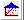
auf der Symbolleiste 2D-Grafiken klicken.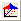
auf der Symbolleiste 2D-Grafiken klicken.|
Eingabedaten |
Legen Sie den Eingabedatenbereich fest. Sie können mehrere Spalten als Eingabevariablen auswählen. |
|
Gruppe |
Legen Sie die Gruppierungsspalte(n) fest, um die Eingabevariablen in mehrere unterschiedliche Zeichnungen aufzuteilen. |
|
Zeichnungen anordnen |
Legen Sie fest, wie die Zeichnungen in verschiedenen Variablen und Gruppen angeordnet werden sollen:
|
|
Verteilung |
Wählen Sie einen Verteilungstyp für Ihre Daten aus. Weitere Informationen zu Verteilungen finden Sie im Abschnitt Verteilungen.
|
|
Score-Methode |
Wählen Sie eine Methode zum Zeichnen der Perzentilapproximationen aus. Weitere Informationen zu den Methoden finden Sie im Abschnitt Score-Methoden.
|
|
Konfidenzband |
Legen Sie fest, ob das Konfidenzband im Wahrscheinlichkeitsdiagramm ausgegeben werden soll. Einzelheiten zur Berechnung finden Sie unter Algorithmen. |
|
Konfidenzniveau(s) in % |
Diese Option ist nur verfügbar, wenn Konfidenzband ausgewählt ist. Legen Sie das Konfidenzniveau in Prozent für die gewählte Verteilung fest. |
| XY-Achsen austauschen |
Legen Sie fest, ob die Positionen von X- und Y-Achse ausgetauscht werden soll. |
| X-Minimum X-Maximum |
Automatische Werte sind X-Minimum = 1 und X-Maximum = 99,5. Wenn Auto deaktiviert ist, verwenden Sie die Werte von Minimum und Maximum der Spalte Referenzlinie in der Ausgabe. Wenn das X-Minimum größer ist als der Wert für Auto, berechnen wir den Perzentilwert p1 für das X-Minimum. Die Perzentilspalte sollte nur p1 und die Werte größer als p1 in der Standardliste einschließen. Wenn das X-Minimum größer ist als der automatische Wert, berechnen wir den Perzentilwert p2 für das X-Minimum und die Perzentilspalte sollte in der Standardliste nur p2 einschließen und Werte kleiner als p2. Wenn das X-Minimum kleiner ist als der automatische Wert, berechnen wir den Perzentilwert p1 für das X-Minimum. Falls p1 < 1e-5, p1 = 1e-5, dann finden wir den Wert für das Minimum 10^(-m), der größer ist als p1, und die Perzentilspalte schließt p1, 10^(-m), 10^(-m+1), ,,,,1, 2,... ein. Wenn das X-Minimum größer ist als der automatische Wert, berechnen wir den Perzentilwert p2 für das X-Minimum. Falls p2 > 99,99, p2 = 99,99, dann finden wir den Wert für das Maximum, der kleiner als p2 ist, in der Liste (99,9, 99,99) und die Perzentilspalte schließt 99, 99,5, 99,9, ... p2 ein. |
|
Ausgabebereich |
Diese Option bestimmt, wo die für das Diagramm berechneten Daten gespeichert werden. |
Origin umfasst vier Verteilungen für Wahrscheinlichkeits- und Q-Q-Diagramme. Die folgende Tabelle listet ihre Dichtefunktionen auf:
| Verteilung | Dichtefunktion p(x) | Bereich | Parameter |
|---|---|---|---|
|
Normal |
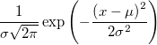 |
Alle |
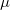 , Mittelwert, ist der lokale Parameter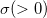 , Standardabweichung, ist der Skalierungsparameter |
|
LogNormal |
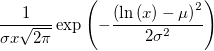 |
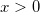 |
ist die Form des Skalierungsparameter. |
|
Exponentiell |
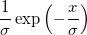 |
ist der Skalierungsparameter. | |
|
Weibull |
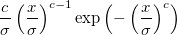 |
ist der Skalierungsparameter 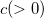 ist der Formparameter. | |
|
Gamma |
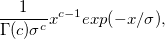 |
ist der Skalierungsparameter |
Zum Erstellen eines Wahrscheinlichkeitsdiagramms sortieren Sie zuerst den beobachteten Datensatz vom kleinsten zum größten Wert:
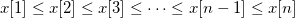
, ist die Gesamtanzahl der Werte des beobachteten Datensatzes.Die sortierten beobachteten Werte werden in der Zeichnung durch Punkte dargestellt, deren X-Koordinaten
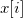
sind und deren Y-Koordinaten mit Hilfe der Score-Methode berechnet werden.Die Skalierungstypen des Wahrscheinlichkeitsdiagramm sind unterschiedlich je nach Verteilung.
| Verteilung | X-Skalierungstyp | Y-Skalierungstyp |
|---|---|---|
|
Normal |
Linear |
Wahrscheinlichkeit |
|
LogNormal |
Ln |
Wahrscheinlichkeit |
|
Exponentiell |
Ln |
Log-Reziprok doppelt |
|
Weibull |
Log10 |
Log-Reziprok doppelt |
|
Gamma |
Log10 |
Wahrscheinlichkeit |
Zum Erstellen eines Q-Q-Diagramms sortieren Sie zuerst den beobachteten Datensatz vom kleinsten zum größten Wert:
Die Y-Werte sind die inversen kumulativen Verteilungsfunktionen der verwendeten Score-Methode.
Eingabedaten werden von klein zu groß geordnet, und die Seriennummer der sortierten Daten wird dann mit Hilfe einer der Methoden unten bewertet. In dieser Tabelle ist
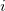
die Seriennummer und die Gesamtanzahl der nicht fehlenden Eingabedaten.| Methoden | Zeichnungsposition 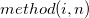 |
|---|---|
|
Blom |
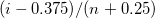 |
|
Benard |
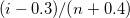 |
|
Hazen |
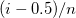 |
|
Van der Waerden |
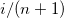 |
|
Kaplan-Meier |
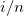 |